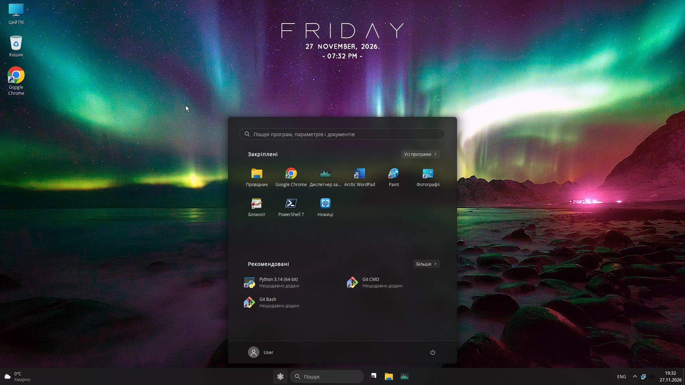
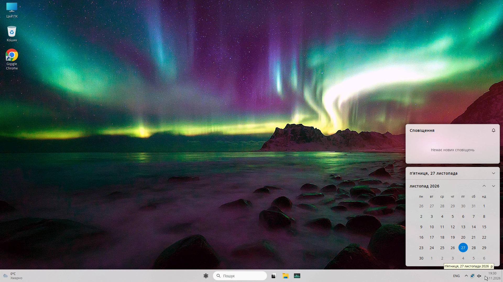
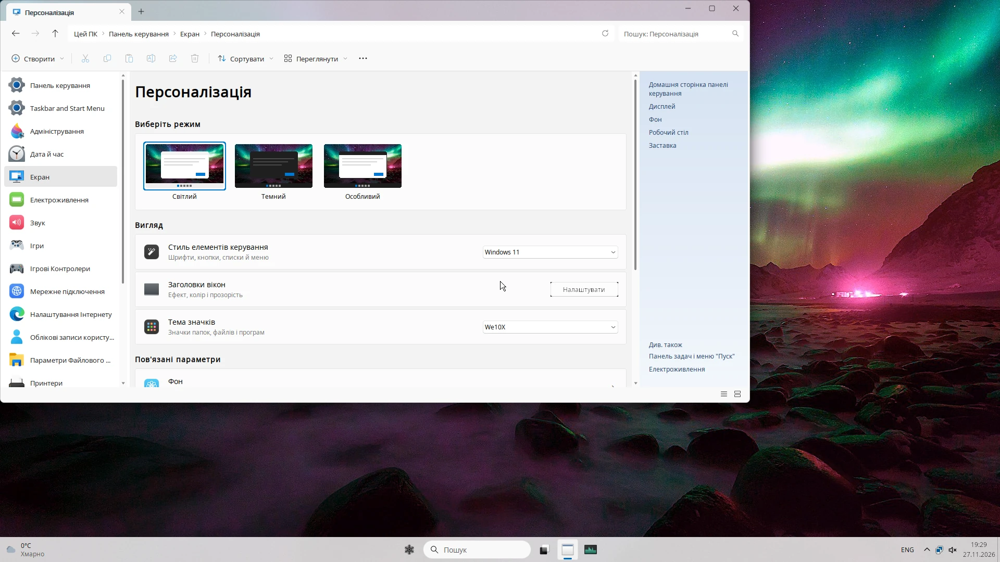

~1 ГБ
Споживання ОЗП у спокої
Швидкий холодний старт та легка система, готова до ігор і роботи.
Унікальна гібридна операційна система для x86, що поєднує найвищі результати продуктивності, нативну підтримку Windows-програм і бездоганну зручність щоденного користування.

Реальний знімок екрана з віртуальної машини QEMU (1920×1080)
Підсистема Windows NT працює безпосередньо на рівні ядра — без зайвих прошарків та втрат.
Швидкий холодний старт та легка система, готова до ігор і роботи.
Створення та керування вікнами напряму в потоці програми через ядро.
Спільна пам’ять і кешування ключів без очікування міжпроцесного обміну.
Прямий вивід на atomic KMS, апаратний курсор, VRR і розмиття Acrylic на GPU.
Знайомий дизайн у стандартах Windows 11: закруглені вікна, вкладки, ефект Acrylic і миттєвий відгук.
Реальні кадри роботи системи у віртуальній машині — від системних діалогів до PowerShell 7 і календаря.



Єдиний світ Windows NT поверх сучасного ядра Linux — без віртуальних прошарків поверх робочого столу.
Модулі ядра win32k, ntos, ntimage та ntsync виконують системні виклики Windows напряму. Ніякого X11 чи стороннього Wayland-композитора — екран належить dwm.exe, а ввід — csrss.exe.
Direct3D 8–12 через DXVK і vkd3d-proton, Vulkan, CUDA, нативна підтримка WinHvPlatform на KVM та контейнери WSL.
Запуск безпосередньо з Live CD ISO або з флешки зі збереженням на реальний диск C: (NTFS), підписом Secure Boot та відкатом оновлень.
Завантажте актуальний Live CD образ для віртуальної машини або сучасного ПК x86-64.
Статус: pre-alpha · Підтримка UEFI (Secure Boot із ARCTIC.cer) та BIOS/CSM · Рекомендовано від 4 ГБ ОЗП.